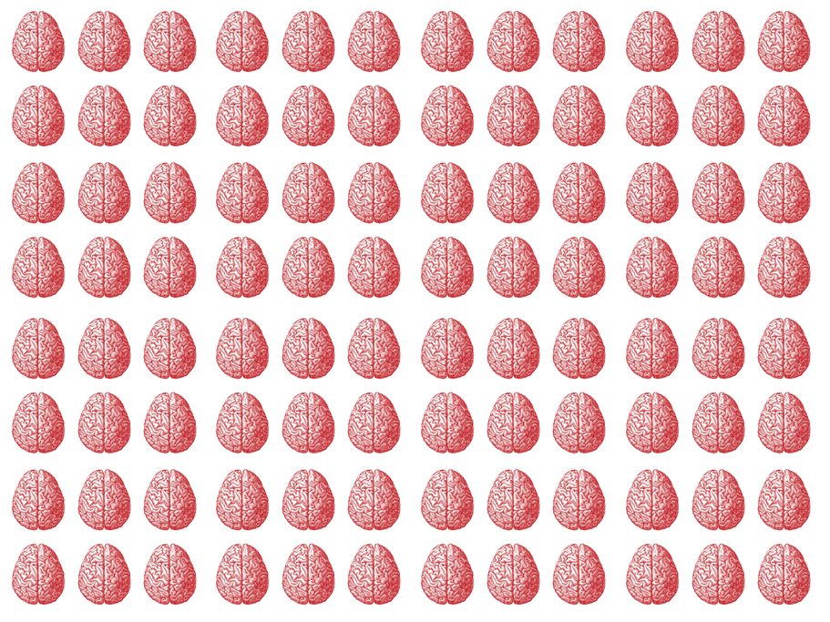
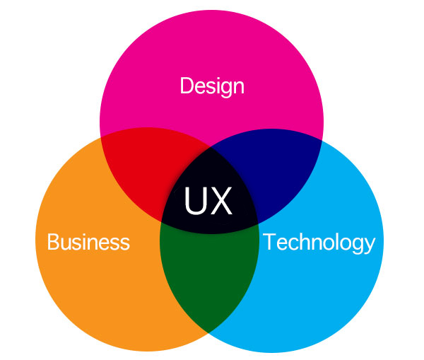
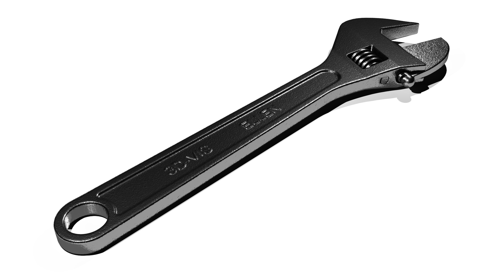
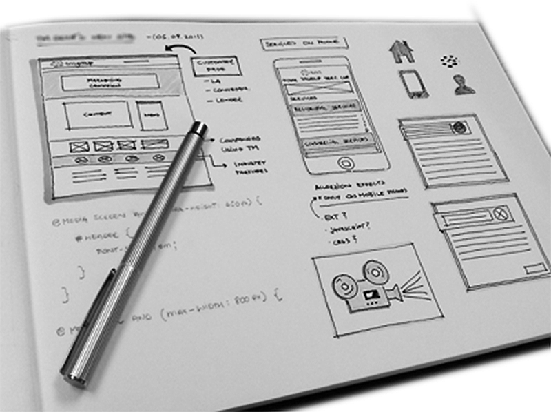
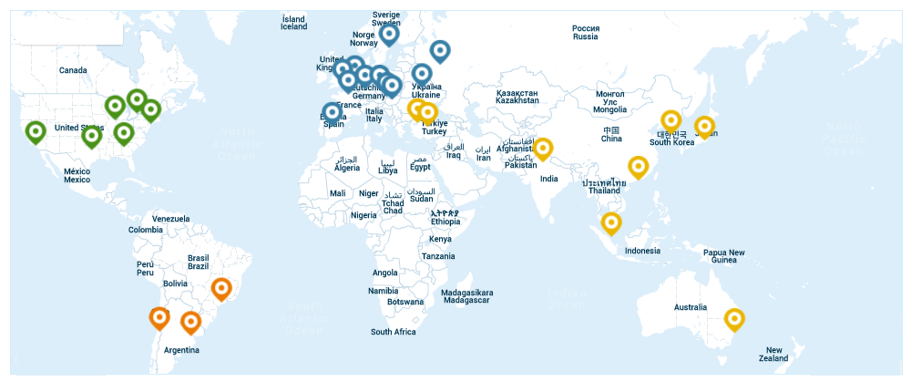

UX are everyting that affects a user's perceptions and responses from the use of a certain product, system or service.
A owner
A project team
An audience

A syndrome
"First we’ll get the application functionally correct and then we’ll put a skin on top of it.”
User experience design isn't a checkbox. You don't do it and then move on. It needs to be integrated into everything you do.
UX whereabouts

An old fashioned view of UX
Interface design
Visual design
...and that's it...
UX is not UI!
What a UX team does today
Field research
Face to face interviewing
Surveys & Online surveys
A sample survey
What do we know about football at IWB?
How many are interested in football?
How many knows that Scania actually have a soccer team that plays Champions League football?
How many knows what Scania means?
Who's watching the game tonight?
Creation and evaluation of tests
Gathering, organizing and presenting statistics
Documentation of personas and findings
Brainstorm coordination
Information architecture
Competitor benchmarking
Communication to stakeholders
Usability
Accessibility
Interaction design
Wireframes
High definition prototyping
Remote usability testing
Interface design
Taxonomy creation
Responsive design
Defining cross functional design patterns
Maintainance of design pattern library
Presentations and UX evangelism
Working tightly with programmers
Browser testing of UI design
...in other words...
We ask a lot of questions!
We hate playing Chinese whispers!
We love scientific studies!
Effects of UX activities
Lower development costs
Better and more efficient applications
Increased user satisfaction
Improvements in business processes
Extended system lifecycle
Lower support costs
Improved releations with business owners
Business Value of UX
A traditional IT project waste
50%
of it's development resources
Of all IT projects launched
70%
fail due to the lack of user acceptance
Rapid prototyping contributes to
50%more accurate estimates for build time and cost.
80%reduced requests for clarification by the dev team.
25%reduced rework and bug fixes after product launch
Internal Scania users
40 000 users in 114 countries
A Scania challenge: Colours in cultures
Some of the UX dangers in an IT project
Isolation of UX designers
Isolation of UX designers
If the UX designers don't get the chance to build a clear understanding of the end users he will build the wrong product. UX resources should be included already in the pre-study, long before the acutal IT-project is formed.
The Silo Mentality
The Silo Mentality
This is a mindset present when certain departments or sectors do not wish to share knowledge or costs with others in the same company. This type of mentality will reduce efficiency in the overall operation, increase waste and hinder reuse.
Confirmation bias
Confirmation bias
Is the tendency to search for, interpret, favor, and recall information in a way that confirms one's beliefs or hypotheses while giving disproportionately less attention to information that contradicts it.
Funding bias
Funding bias
May lead to selection of outcomes and requirements that favor an application's financial sponsor.
Selection bias
Selection bias
Involves individuals being more likely to be selected for study than others, biasing the sample.
Immature approach
Immature approach to UX
The history of HTML and it's ease of use often makes projects work as they where a "basement businesses".
Scania UX Zones
Branding Zone
Usability Zone
Driver Zone
Usability Zone = Tool Zone

Sketching a product

Scania Products & Services
Trucks
Busses
Engines
Maintainance
Training
Applications!
Technical enablers
static.scania.com
28 Data Centers · 5 Continents · 23 Countries

https://static.scania.com
Host of JS and CSS frameworks
Centralized UX design specifications
Scania UI Guidelines
Scania Bootstrap
Final words
We want our co-workers to spend as little time as possible in front of our applications.
We need "feet on the ground", taking care of customers and prospects.